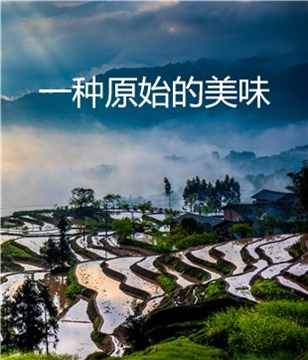

- 


- 1
- 2
- 3
- 4
鸡肉滋味鲜美但需谨防 三部分含剧毒绝对别吃
奶相差不大空腹喝咖啡真的能减肥吗？
自媒体博文 投稿
- 2019中国（杭州）国际孕婴童用品产业博览会
- 产品提名：风荷古韵
- 七绝·流年
- 2019北京自动售货机及自助终端设备展览会
- 2019北京国际智能零售暨无人售货产业博览会
- 2019华北国际孕婴童产品博览会3月山东潍坊鲁台会展中心
- 2019年7月辽宁沈阳国际微商博览会


国内新闻国际新闻
市场曝光MORE >
食事关注MORE >
市场行情MORE>

市场曝光MORE >

技术动态MORE >
种植技术食品加工
食疗养生MORE >
饮食精髓MORE >
食品选购MORE>
绿色烹调MORE >
药食保健MORE >


 2017年12月7日 6：32：35大雪节气到！由来与习俗大雪节气，太阳黄经达255度。大雪，顾名思义，雪量大。古人云：“大者，盛也，至此而雪盛也”。到了这个时段，雪往往下得大、范围也广。
2017年12月7日 6：32：35大雪节气到！由来与习俗大雪节气，太阳黄经达255度。大雪，顾名思义，雪量大。古人云：“大者，盛也，至此而雪盛也”。到了这个时段，雪往往下得大、范围也广。
绿色基地MORE >
美食典故MORE >
市场行情MORE >
关注微信公众号